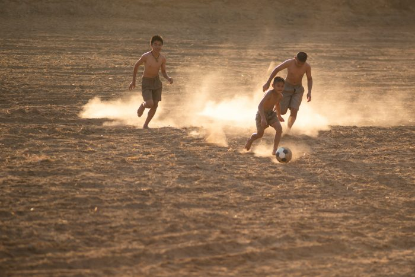
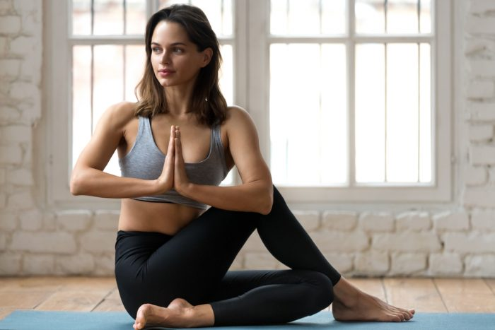
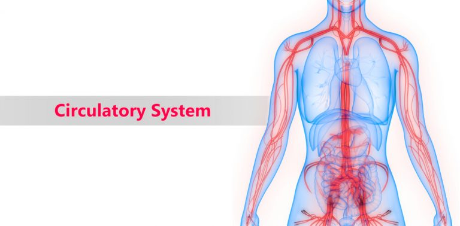
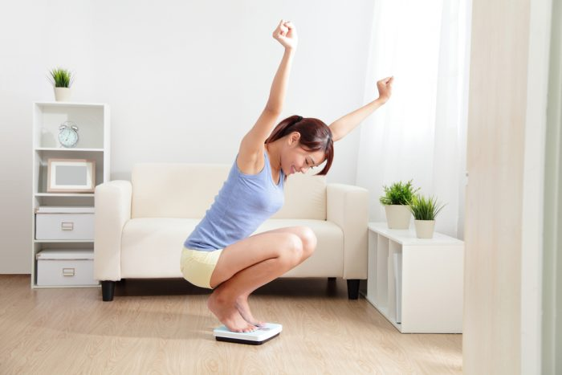

ကလပ်တက်တာ ကျန်းမာရေးအတွက်ပါ။ကလပ်တက်တယ် နိုက်အောက်တယ် (night out) တယ်ဆိုရင် အိမ်က လူကြီးတွေက မကြိုက်ကြနဲ့ အမြဲရန်အတိုက်အခံဖြစ်ရတယ်မလား။ လေ့လာချက်တွေအရတော့ ကလပ်တက်တာ ပျော်ဖို့ရွှင်ဖို့အတွက်ပဲ မဟုတ်ဘဲ စိတ်ကျန်းမာရေးအတွက်ရော ကိုယ်ကျန်းမာဖို့အတွက်ပါ တစ်ဖက်တစ်လမ်းက အထောက်အကူ ပြုနိုင်ပါတယ်တဲ့။ |
အကြောတွေ ပြေလျော့စေဖို့ ဒီလိုလေး အကြောလျှော့ရအောင်တစ်နေကုန် အလုပ်စားပွဲမှာထိုင်ပြီး တောက်လျောက်အလုပ်လုပ်နေရလို့ အကြောတွေတင်းနေပြီလား။ အကြောတွေ တင်းတာက တစ်ရက်တလေဆို ကိစ္စမရှိပေမယ့် အချိန်ကြာလာတဲ့အခါ ကျန်းမာရေးကို နည်းအမျိုးမျိုးနဲ့ ထိခိုက်စေနိုင် ပါတယ်။ ဒါကြောင့် အကြောတွေတောင့်တင်းမှုကင်းအောင် လေ့ကျင့်ခန်းလေးတွေ လုပ်ပေးဖို့လိုပါမယ်။ အကြောတွေ ပြေလျော့အောင် ဘယ်လိုလေ့ကျင့်ခန်းလုပ်ပေးရမလဲသိချင်ရင် ဒီဆောင်းပါးလေးထဲမှာ ဖတ်ကြည့်လိုက်ပါနော်။ အကြောလျော့တာက အချိန်အများကြီး မပေးရဘဲ ခန္ဓာကိုယ်ကို အမှန်တကယ် ကျန်းမာစေနိုင်ပါတယ်။ အကြောလျော့တာ က သွေးလည်ပတ်မှုကောင်းစေသလို ကြွက်သားတွေပြေလျော့စေနိုင်ပါတယ်။ ဒီတော့ တစ်နေ့တာမှာ ၁၅ မိနစ်လောက် အချိန်ပေးပြီး ဒီလေ့ကျင့်ခန်းလေးတွေကို အတူတူလုပ်ကြည့်ရအောင်နော်………… |
အပြေးလေ့ကျင့်ခြင်းနှင့် စိတ်ကျန်းမာရေးကိုယ်လက်လှုပ်ရှားမှုက ကျန်းမာရေးအတွက် အထောက်အကူပြုပေးတယ်ဆိုတာ အထွေအထူးပြောနေစရာမလိုအောင် သိထားပြီးဖြစ်မှာပါ။ ကိုယ်လက်လှုပ်ရှားမှုဆိုတဲ့အထဲမှာ လုပ်လို့ရတဲ့ လေ့ကျင့်ခန်းတွေက အများကြီးပါ။ ဒီလေ့ကျင့်ခန်းတွေ ထဲမှာမှ အပြေးလေ့ကျင့်ခန်းလုပ်ပေးတာက စိတ်ရောကိုယ်ပါ ကျန်းမာစေနိုင်ပါတယ်။ ဘာကြောင့် ဒီလိုပြောရတာလဲ ဆိုတာကို ဒီဆောင်းပါးလေးကနေတဆင့် ပြောပြပေးပါရစေလား……..စိတ်ရောကိုယ်ပါ ကျန်းမာစေဖို့ အပြေးလေ့ကျင့်ပါ |
ရုံးမှာ အားတဲ့အချိန်လေး ဘာလို့ table tennis (ပင်ပေါင်) ကစားသင့်တာလဲခုနောက်ပိုင်း အလုပ်ခွင်တွေဟာ တင်းကျပ်၊ တွန်းအားပေးတတ်တဲ့ အလေ့အထမရှိတဲ့ flexible workplace တွေဖြစ်လာကြတယ်နော်။ စည်းလွတ်ဝါးလွတ်ထားတားတာမဟုတ်ဘဲ စည်းကမ်းတကျလေး အလုပ်ခွင်ကိုကြပ်မတ်ထားပေမယ့် လှုပ်ရှားလုပ်ဆောင်မှုတွေကို လွတ်လပ်ခွင့်ပေးထားတာမျိုးပါ။ ဒီလိုအလုပ်ခွင်မျိုးမှာ ဝန်ထမ်းတွေက ပိုပြီး တက်ကြွတယ်၊ ဆန်းသစ်တဲ့ဖန်တီးနိုင်စွမ်းတွေရှိလာတယ်၊ အလုပ်အတွက်ရော၊ ကိုယ့်အတွက်မှာပါ တိုးတက်မှုရှိလာအောင် ကြိုးစားနိုင်လာတယ်၊ ကြောက်ရွံ့နေစရာမလိုတဲ့အတွက် ကိုယ်ပိုင်ဆုံးဖြတ်နိုင်စွမ်းရှိလာတယ်၊ စသည်ဖြင့် ကောင်းကျိုးတွေရှိတာပေါ့။ အဲဒီထဲကမှ တချို့ရုံးတွေမှာ ဝန်ထမ်းတွေရဲ့ခဏအနားယူချိန်(coffee break) မှာ table tennis ကစားဖို့ စီစဉ်ထားပေးတာတွေရှိပါတယ်။ table tennis ကစားရင်းနဲ့ ဘယ်လိုအကျိုးကျေးဇူးတွေပါ ရနိုင်လဲဆိုတာလေး စိတ်ဝင်စားဖို့ကောင်းပါတယ်။ ဆက်ကြည့်ရအောင် … |
|  | ဘောလုံးကန်ခြင်းရဲ့ အသိသာဆုံး အကျိုးကျေးဇူး (၉) ချက်ဘောလုံးအားကစားက လူကြိုက်များလား၊ မများလား နိုင်ငံတကာက ဘောလုံးပရိသတ်အင်အားကိုသာ ကြည့်ပါ။ ဘောလုံးပွဲဟေ့ဆို ထိုင်ရာမထစတမ်း စုဝေးကြည့်ကြ၊ တစ်နိုင်ငံလုံးနီးပါး အားပေးလိုက်ကြတာမျိုး။ ကိုယ့်နီးစပ်ရာ ဘောလုံးအားကစားကွင်းလေးတွေမှာလည်း အားတဲ့အချိန် အပျော်တမ်းစုကစားကြပါသေးတယ်။ ဒီဘောလုံးကစားနည်းက ခန္ဓာကိုယ်ကျန်းမာရေးအတွက် သိပ်အကျိုးပြုနိုင်တယ်ဆိုတာရော သိထားပြီးပြီလား။ အပျော်တမ်းအဖြစ်နဲ့ ကလေး၊ လူကြီး အတူကစားလို့တောင်ရတဲ့ ဒီကစားနည်းက တကယ်ကို အကျိုးကျေးဇူးများပါတယ်နော်။ |
|  | ယောဂ လုပ်ပါလို့ပြောရတဲ့အကြောင်းအရင်းယောဂကရှေးကျတဲ့ လေ့ကျင့်ခန်းပုံစံတစ်ခုပေါ့။ အိန္ဒိယကနေ အစပြုလာတဲ့ ကိုယ်လက်လေ့ကျင့်ခန်းတစ်မျိုးပေါ့။ ယောဂက ကျန်းမာရေးအတွက် အထောက်အကူပြုပေးနိုင်သလို ခန္ဓာကိုယ်အတွက်ရော ကြွက်သားတွေ အတွက်ပါ အထောက်အကူပြုပေးနိုင်ပါတယ်။ယောဂကနေ ဒီလိုအကျိုးကေးဇူးတွေရရှိနိုင်ပါတယ် |
|  | သွေးလည်ပတ်မှုကောင်းအောင်လုပ်ကြမယ်ယုံရခက်ပေမဲ့ လူသားတစ်ယောက်ရဲ့ ခန္ဓာကိုယ်ထဲက သွေးကြောတွေအားလုံးကိုဆက်သွယ်လိုက်ရင် စုစုပေါင်းအရှည်မိုင် ၆ သောင်းကျော်တောင်ရှိတယ်ဗျ။ ဒီလောက်ရှုပ်ထွေးတဲ့ သွေးကြောစနစ်ကြီးကို အဓိကထောက်ပံ့ပေးထားတာကတော့ လက်သီးဆုပ်အရွယ်ရှိတဲ့နှလုံးနဲ့ ကြွက်သားတချို့ပါ။ သွေးကြောတွေက ခန္ဒာကိုယ်အတွက်မရှိမဖြစ်လိုအပ်တဲ့ အောက်ဆီဂျင်ဓာတ်ကိုသယ်ပြီး တစ်ကိုယ်လုံးနေရာအနှံ့ကို ပို့ပေးတယ်ပေါ့ဗျာ။ ပြီးရင်သက်ဆိုင်ရာ အစိတ်အပိုင်းအသီးသီးက ရတဲ့အောက်ဆီဂျင်ကိုသုံးစွဲတယ်ပေါ့။ အဲ….ဒါပေမဲ့ သွေးလည်ပတ်မှုမကောင်းရင်တော့ အန္တရာယ်ရှိတယ်နော်။ သွေးကြောကျဉ်းလို့ဖြစ်ဖြစ်၊ ပိတ်လို့ဖြစ်ဖြစ် ပို့ရမယ့်နေရာကိုသွေးမရောက်လို့ကတော့ ဒီပြဿနာတွေဖြစ်လာနိုင်တယ်ဗျ – ခြေ၊လက်တွေမှာသွေးကောင်းကောင်းမလျှောက်တော့ရင် ခြေလက်တွေအေးစက်လာမယ်၊ ထုံလာမယ် – အကယ်၍ အသားဖြူတဲ့သူဆို ခြေထောက်မှာသွေးသိပ်မရောက်တော့ရင် ခြေထောက်ကပြာတာတာအရောင်ဖြစ်လာပါမယ် |
|  | ကိုယ်အလေးချိန်တက်မလာအောင် ထိန်းထားချင်သူတွေအတွက် သင့်တော်တဲ့ လေ့ကျင့်ခန်းအချို့တိုးတက်လာတဲ့ခေတ်ကာလအနေအထား အစားအသောက်နဲ့ လုပ်ငန်းခွင်ပုံစံတွေကြောင့် မလိုချင်ဘဲတိုးလာတာတွေက ခန္ဓာကိုယ်တွင်းအဆီတွေနဲ့ ကိုယ်အလေးချိန်တွေပါ။ တစ်ပတ်တစ်ခါ ပေါင်ချိန်လိုက်တိုင်းကို ပေါင်ချိန်တွေတက်နေတာကြောင့် စိတ်ပျက်နေတဲ့ ကိုကိုတွေနဲ့လေဒီတွေအတွက် ခန္ဓာကိုယ်က အဆီပိုတွေကို ကိုယ်အလေးချိန်ကို ထိန်းညှိရာမှာ အထောက်အကူဖြစ်စေမယ့် လေ့ကျင့်ခန်းလေးတွေကို ဒီဆောင်းပါးလေးကနေတဆင့်ပြောပြပေးမယ်နော်။၁. Plank ထောက်ပါခန္ဓာကိုယ်တစ်ခုလုံးက ကြွက်သားတွေအတွက် အထောက်အပံ့ပေးနိုင်တဲ့ လေ့ကျင့်ခန်းတစ်ခုပေါ့။ ညီညာနေတဲ့ ကြမ်းပြင်တစ်ခုရှိရုံနဲ့တင်လုပ်လို့ရတဲ့ ကိရိယာလွတ်လေ့ကျင့်ခန်းတစ်မျိုးပါ။ လက်တွေခြေထောက်တွေနာမှာ စိုးရင်တော့ ယောဂဖျာလေးခင်းပြီးလုပ်လို့ရပါတယ်။ |
|
|
ချပ်ရပ်လျပတဲ့ ဗိုက်ကြွက်သားတွေအတွက် လေ့ကျင့်ခန်းဗိုက်ကလေးချပ်ရပ်နေတာကလည်း လေဒီလေးတို့ကို ယုံကြည်မှုတိုးစေတဲ့ အချက်လေးတွေထဲကတစ်ခုပါ။ ဒါဆို Hello ဆရာဝန်ပရိသတ်ကြီးထဲမှာရော သူများတွေဗိုက်သား ချပ်ချပ်ရပ်ရပ်လေးနဲ့ ဘာဝတ်ဝတ်လှနေတာကို ကြည့်ပြီး အားကျနေတဲ့သူလေးတွေရှိလား။ ဒါဆိုရင်တော့ သူများတွေကို အားကျမနေဘဲ ကိုယ့်ဗိုက်လေး ကိုယ်ကြည့်မိတိုင်း နှစ်ထောင်းအားရဖြစ်စေဖို့ ဒီဆောင်းပါးလေးက အကောင်းဆုံးထောက်ပံ့ပေးနိုင်မှာပါနော်။ချပ်ရပ်လှပတဲ့ ဗိုက်ကြွက်သားလေး ပိုင်ဆိုင်နိုင်စေဖို့ဒီနေရာမှာ တစ်ခုကြိုပြောထားချင်တာက ချပ်ရပ်လှပတဲ့ ဗိုက်ကြွက်သားလေးတွေရဖို့ ကြိုးပမ်းမှုက တစ်ရက်၊ နှစ်ရက်နဲ့မဖြစ်နိုင်သလို လပိုင်းလောက်နဲ့လည်း မဖြစ်နိုင်ပါဘူး။ စိတ်ရှည်ဖို့လိုသလို အနေအထိုင် အစားအသောက်ကို သေချာဂရုစိုက်ပေးပြီး လေ့ကျင့်ခန်းပုံမှန်လုပ်ဖို့လည်း လိုပါမယ်။ |

|
ကြောက်စိတ်တွေကို ကျော်လွှားပြီး ရေကူးသင်ကြမယ်ခုဆို ပိတ်ရက်တွေကလည်းများ ခရီးသွားမယ်ဆိုရင်လည်း သူငယ်ချင်းတွေက ကမ်းခြေသွားမယ်ဆိုရင် ကိုယ်က အဖွဲ့ထဲက ရေကူးရမှာကြောက်တဲ့သူ၊ ရေမကူးတတ်တဲ့သူဖြစ်နေတယ်ဆိုရင် ပင်လယ်ပြင်ကိုသွားတဲ့ခရီးတွေမှာဆို ပင်လယ်ပျော်တွေကြားထဲမှာ ကိုယ်ကမျက်နှာငယ်ရမှာပါ။ သူများတွေက ရေငုပ်တယ်၊ ရေအောက်အလှတွေကိုလည်း ခံစားတယ်၊ ပင်လယ်ပြင်ထဲမှာ ရေကူးတယ်၊ ကိုယ်ကတော့ ရေအနက်ကိုကြောက်ပြီး ရေတိမ်မှာပဲနေတယ် ဓာတ်ပုံရိုက်ရုံလောက်နဲ့ဆိုရင်တော့ ကမ်းခြေခရီးဟာ အဓိပ္ပါယ်ရှိမှာမဟုတ်ပါဘူး။ ဒီဆောင်ပါးလေးမှာတော့ ရေကိုအရမ်းကြောက်တတ်တဲ့သူတွေအတွက်မဟုတ်ဘဲ ရေကူးသင်ရမှာ၊ ရေနက်ထဲ ရေကူးရမှာကြောက်တဲ့သူတွေအတွက် အဲ့ဒီစိတ်တွေကို ဘယ်လိုကျော်လွှားမယ်ဆိုတာကို ပြောပြပေးသွားမှာဖြစ်ပါတယ်။ |